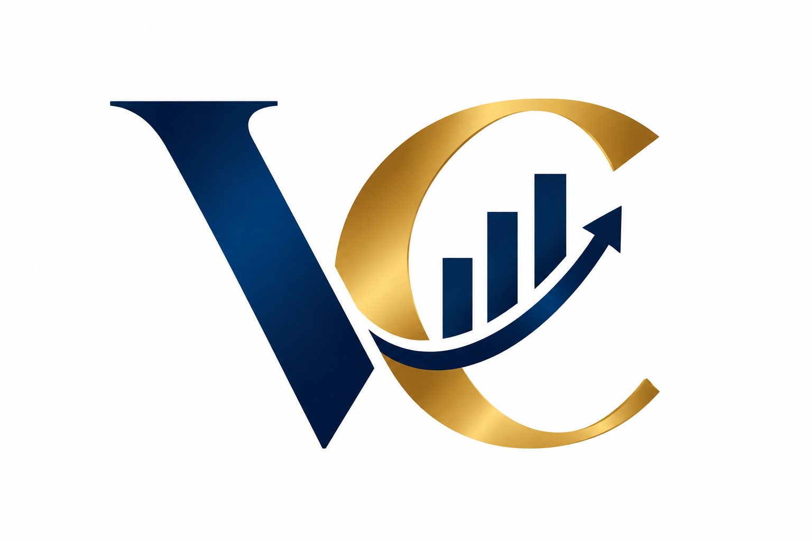

We are pleased to submit this proposal to Company XYZ for the provision of professional Human Resource services.
People are one of the most important assets of any organisation. As businesses grow and evolve, effective human resource management becomes critical in attracting and retaining talent, improving employee performance, managing workplace relationships, ensuring compliance and building a strong organisational culture.
Our proposed HR support model is designed to provide Company XYZ with practical, strategic and responsive HR solutions without necessarily requiring a full in-house HR function.
We will work closely with the Company's leadership and management team to understand its business priorities and provide HR solutions that are aligned with its strategic objectives, operational requirements and organisational culture.
Our approach will combine strategic HR advisory, employee lifecycle management, compliance, performance management, talent development and employee engagement to strengthen the Company's people practices and overall organisational effectiveness.
We recognise that organisations require an HR function that goes beyond maintaining employee records and processing routine HR transactions.
Company XYZ may require support in areas such as:
Our proposed engagement will therefore be tailored to the Company's specific requirements following an initial HR assessment.
The key objectives of the proposed HR services are to:
At the commencement of the engagement, we will undertake an HR review to understand the Company's current people practices, identify gaps and establish priorities.
The review may cover:
A report will be provided highlighting key findings, risks and recommended actions.
We will develop, review and update HR policies and procedures appropriate to Company XYZ's size, structure and business needs.
These may include:
We will support Company XYZ in attracting and selecting suitable talent through a structured recruitment process.
Services may include:
We will establish structured processes to ensure employees have a positive experience when joining or leaving the organisation.
Onboarding
Offboarding
We will assist Company XYZ to establish a performance management framework that promotes accountability, productivity and continuous improvement.
Services will include:
We will provide professional support in managing employee relations matters fairly, consistently and confidentially.
This may include:
Our approach will emphasise fairness, procedural consistency, confidentiality and compliance with applicable employment requirements.
We will support Company XYZ in developing employee capability through structured learning and development interventions.
Services may include:
We will provide advisory support on employee remuneration and benefits, including:
We will support Company XYZ in strengthening compliance with applicable employment laws, regulations and HR best practices.
This may include review of:
Where specialist legal advice is required, appropriate legal professionals may be recommended.
We will support initiatives designed to build an engaged, productive and values-driven workforce.
Possible interventions include:
We can provide ongoing support to ensure that HR records and processes are properly maintained.
This includes:
Management will have access to professional HR advice on day-to-day and strategic people matters.
We will advise management on:
We propose a flexible HR partnership model based on Company XYZ's needs.
Option 1: Retainer-Based HR Support
Under this model, we provide ongoing HR advisory and operational support for an agreed monthly retainer.
This may include:
Option 2: Project-Based HR Services
Company XYZ may engage us for specific HR projects, such as:
Option 3: Comprehensive Outsourced HR
Under this arrangement, we act as an extension of Company XYZ's HR function and provide comprehensive HR support covering the employee lifecycle.
The final service model will be agreed based on the Company's requirements.
Phase 1: HR Diagnostic
Conduct an initial assessment of the Company's current HR practices, systems, policies and workforce.
Phase 2: HR Strategy and Prioritisation
Develop a practical HR action plan based on identified gaps and business priorities.
Phase 3: Implementation
Implement agreed HR interventions, policies, systems and processes.
Phase 4: Management Support
Provide ongoing HR advisory and operational support to management and employees.
Phase 5: Monitoring and Reporting
Provide regular reports on key HR activities, risks, workforce trends and recommended interventions.
Depending on the agreed scope of work, deliverables may include:
Engaging our HR services will enable Company XYZ to:
We recognise that HR work involves highly confidential employee and organisational information.
All information accessed during the engagement will be treated with the highest level of confidentiality and professionalism.
We will maintain appropriate safeguards relating to employee information and will operate in accordance with applicable professional, ethical and data protection requirements.
We will maintain regular communication with the Company's designated management representative.
Depending on the agreed engagement model, reporting may include:
Urgent or sensitive HR matters will be escalated promptly.
Our fees will depend on the scope, frequency and complexity of the services required.
| Service | Proposed Fee |
|---|---|
| Initial HR Audit/Diagnostic | KSh (………) |
| Monthly HR Retainer | KSh (,,,,,,,,,,,,) |
| HR Policy Development | KSh (……….) |
| Recruitment Services | KSh (……….) |
| Performance Management Project | KSh (……….) |
| Training & Development | KSh (……….) |
| Other HR Projects | By quotation |
A detailed quotation can be provided following confirmation of Company XYZ's specific HR requirements.
We propose an initial engagement period of six months, subject to review and renewal by mutual agreement.
The initial period will allow sufficient time to assess existing HR practices, implement priority interventions and demonstrate measurable value to the organisation.
Our approach to HR is based on four principles:
Strategic – We align HR solutions with business objectives.
Practical – We provide solutions that can be implemented effectively within the Company's operating environment.
People-Centred – We recognise that engaged and well-supported employees contribute directly to organisational success.
Results-Oriented – We focus on measurable improvements in performance, compliance, employee experience and organisational effectiveness.
We aim to become a trusted HR partner to Company XYZ, providing management with the expertise and support required to effectively manage its people and achieve its business objectives.
We appreciate the opportunity to submit this proposal to Company XYZ.
We believe that effective HR management should be a strategic enabler of business success. Through this partnership, we will support Company XYZ in building robust HR systems, developing its people, strengthening organisational culture and managing people-related risks effectively.
We look forward to the opportunity to meet with management, understand the Company's priorities in greater detail and agree on a customised HR service package that delivers meaningful and sustainable value.
Thank you for considering our proposal.
Yours faithfully,